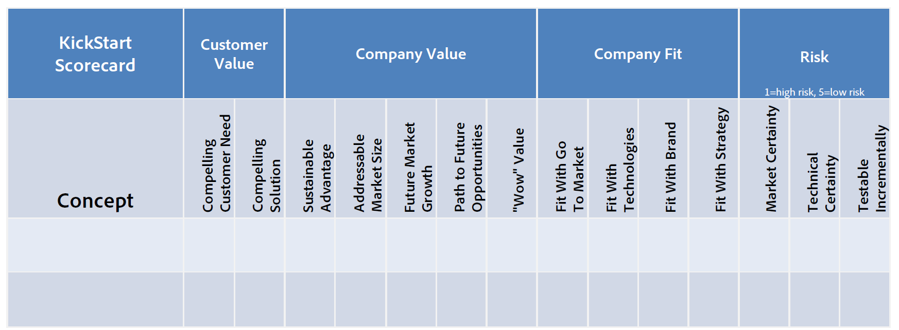

We have the opportunity statement that explained what we needed to do, we had the brainwriting session to generate ideas now we need a method to score and choose an idea to take forward.
The scorecard offers a structured way for you to self-assess your idea. It also makes it easy for you to get useful assessments from other smart people inside your company.

The scorecard is taken from the Adobe Kickbox method.
Here’s an overview of each part of the scorecard.
You can ask key stakeholders to score each idea independently and then collate the final scores.
You could build a online tool to do it using. Try either Google Spreadsheets or WooFoo
Can be run in the morning before the brainstorming workshop.